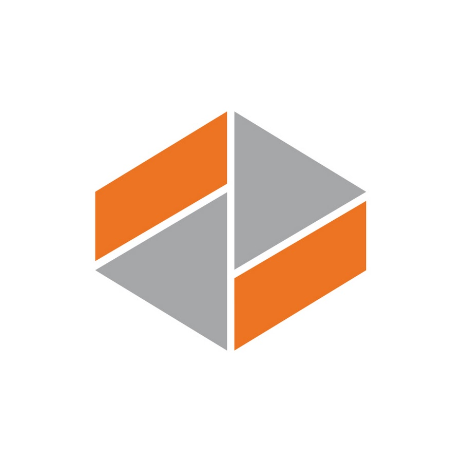
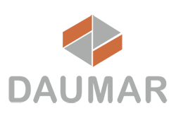
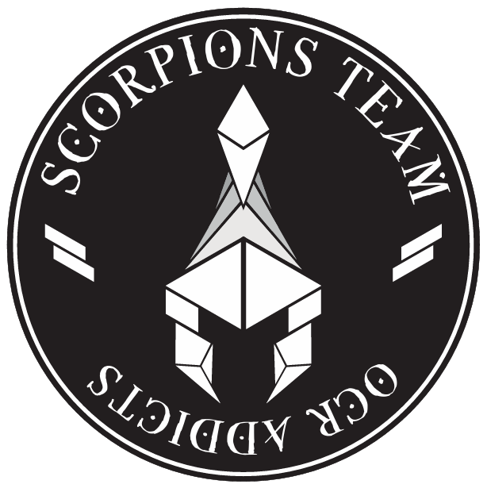
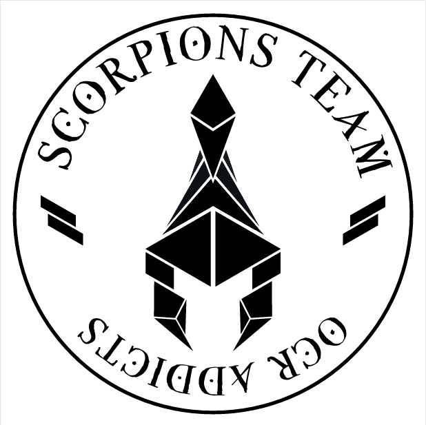
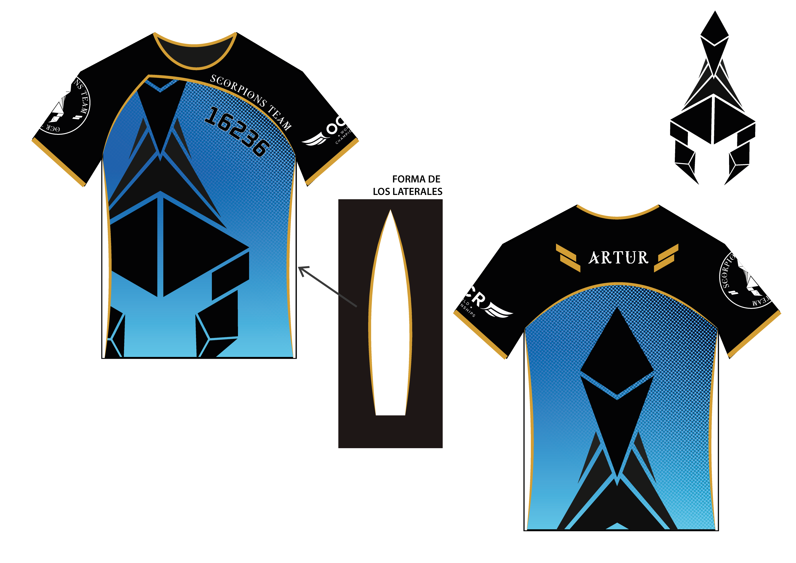
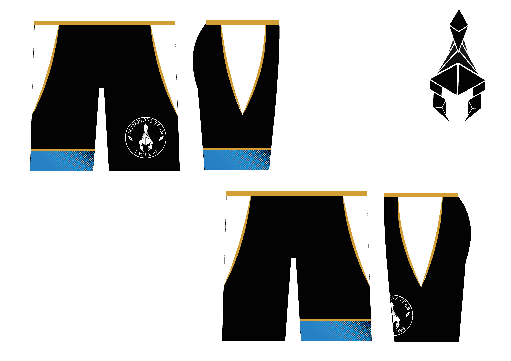
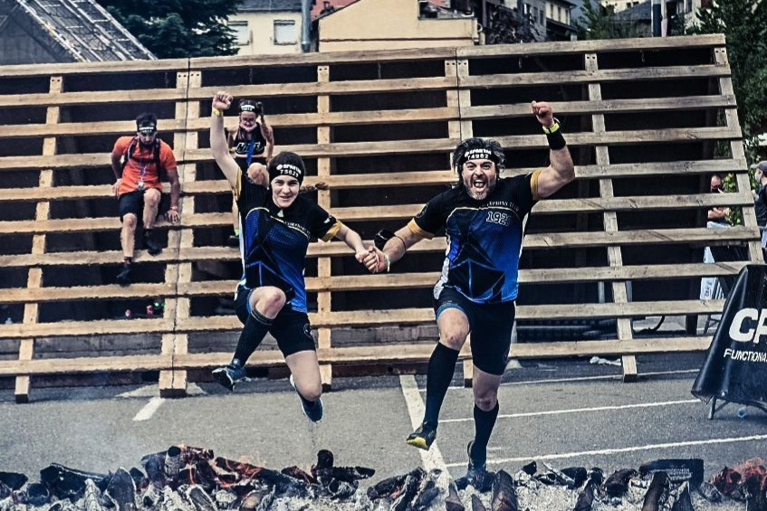

OCR Team: Scorpions Team
Creation of the logo and design of the team's sports uniform.
Overview
This project involved the creation of a logo and sports uniform for an OCR (Obstacle Course Racing) team. The objective was to design a visual identity that reflected the team's personality while incorporating elements that were meaningful to its members.
The final work included the development of the logo, color system, and uniform design, creating a cohesive identity that could be used both during competitions and in team communications.
Problem & Goals
The team needed a recognizable identity that would help strengthen its sense of belonging and make it easily identifiable during competitions.
The challenge was to create a logo that respected specific client requirements while also translating the team's spirit into a clear visual language.
Another important goal was designing a sports uniform that felt personal to the team members and reflected their shared culture and references.
Process
Briefing & Analysis
The first step was meeting with the team to understand their goals, preferences, and any specific requirements for the logo and uniform design. Gathering this information early helped ensure that the final identity would feel meaningful and representative of the team.
Since most of the members of this team of workers were employees of the same company (Daumar), they asked me to make the logo have a style similar to their company's logo, or if the logo could be created from the same shapes as the logo of the company where they worked.
They also requested that the logo be a scorpion or include some element related to a scorpion, since most of them are Scorpios in their horoscope and the Spartan races that year in which they were going to participate were also represented with that same animal.
For the uniform, they also gave me another requirement: it had to be the same blue shade as the mats where they train, because they had an inside joke about that color (mat blue) and wanted it to be representative of the team.


Research & Observation
Before starting the visual exploration, I researched obstacle course racing teams, sports clubs, eSports teams and competitive team identities to understand common visual trends within the sector.
Particular attention was given to logos that balanced aggressiveness, energy, and readability, as well as uniforms that remained visually distinctive in outdoor environments.
This research helped identify design opportunities and informed decisions regarding shapes, color usage, and overall visual impact.
Logo Exploration
Several logo concepts were explored before arriving at the final solution. The initial ideas focused on different ways of representing a scorpion while maintaining a bold and recognizable silhouette.
During the exploration phase, I started playing with the two basic shapes of the Daumar logo, arranging them in different ways, experimenting with dimensions and overlaps. I tried creating various figures related to their request.
Considering their specific requirements (the scorpion theme and the team's strong connection to Spartan races), I developed a concept that combined both ideas into a single symbol: a Spartan-style helmet whose silhouette also evokes the shape of a scorpion.


Color Palette & Typography
The main color was selected based on a direct client request. The team wanted to use the same distinctive blue tone as their training mats, transforming an internal joke into a meaningful part of the team's identity.
Typography was chosen to complement the logo's bold and energetic character while remaining clear and legible on sportswear, social media graphics, and other team-related materials.
Together, the color palette and typography helped establish a recognizable and cohesive visual system.
Uniform Design
Once the logo was finalized, I began working on the team's uniform design.
One of the main requirements was the use of the same distinctive blue tone as the training mats, a color that had become an internal symbol among team members. Incorporating this reference helped create a stronger emotional connection between the team and the final design.
Different layouts and logo placements were explored to ensure visibility during competitions while maintaining a balanced and recognizable appearance. Special attention was given to how the design would look in motion and from different viewing distances.
The objective was to create a uniform that felt cohesive with the team's identity while remaining functional for athletic use.


Final Outcome

The final result was a complete visual identity consisting of a custom logo and sports uniform tailored to the team's requirements.
By incorporating references meaningful to the team members, the design helped reinforce a sense of belonging while providing a recognizable presence during competitions and events.
Reflection
This project highlighted the importance of understanding the personal motivations and culture behind a group when creating a visual identity.
One of the most interesting aspects was translating informal references and internal team jokes into meaningful design decisions that felt authentic rather than arbitrary.